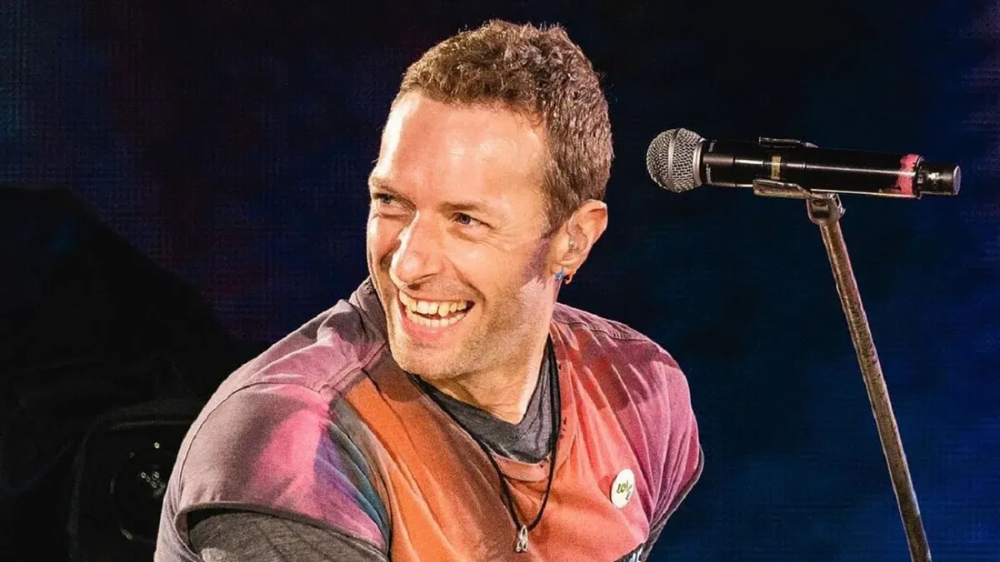

Presentacion de los mimebros de ColdPlay
Chris Martin
El es Chris Martin (Exeter, Devon; 2 de marzo de 1977), más conocido como Chris Martin, es un cantautor, músico, compositor, productor discográfico, activista social y filántropo británico. Es reconocido por ser fundador y vocalista principal de la banda británica Coldplay. Es conocido además por su activismo en campañas a favor del comercio justo y por estar en contra del hambre en el mundo. Alcanzó la fama mundial con el lanzamiento del sencillo "Yellow" en el año 2000, una canción que también le valió a la banda su primera nominación al Premio Grammy por Mejor Canción de Rock. También obtuvieron aclamación de la crítica y varios elogios por sus álbumes subsiguientes, incluyendo A Rush of Blood to the Head y Viva la Vida, ganando un premio Brit por el primero y el premio Grammy por ambos. 
Guy Berryman
El es Guy Rupert Berryman, es el bajista de la banda Coldplay. Berryman nació en Kirkcaldy, Fife, Escocia, pero se trasladó a Kent, Inglaterra a la edad de doce años, asistió a Kent College, una prestigiosa escuela privada. Toca el bajo desde que tenía dieciséis. Creció escuchando música groove y funk. Antes de la formación de Coldplay en la University College London, Berryman se encontraba en una banda llamada Time Out, mientras estaba todavía en la escuela.
Jon Buckland
El es Jonathan Mark Buckland, conocido también como Jonny Buckland, es miembro cofundador y el guitarrista principal de la banda británica Coldplay. Vivió en Londres hasta los cuatro años de edad, cuando se trasladó a vivir con su familia. Chris Martin a menudo se refiere a él como "Jonny Boy" o "Jay" durante conciertos en vivo, sobre todo si Buckland está a punto de hacer un solo o un riff largo con la guitarra.
William Champion
El es William Champion, más conocido como Will Champion, es un músico y compositor británico. Es baterista y voz secundaria de la banda Coldplay. De pequeño, a uno de sus vecinos le regalaron una batería y así tuvo su primera experiencia tocando, hasta que le prestó más atención a otros instrumentos. A los 8 años de edad aprendió a tocar piano y violín, y la guitarra y el bajo a sus 12 años. Inició sus estudios en la escuela primaria Portswood Primary School.